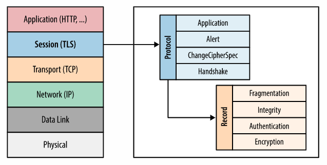
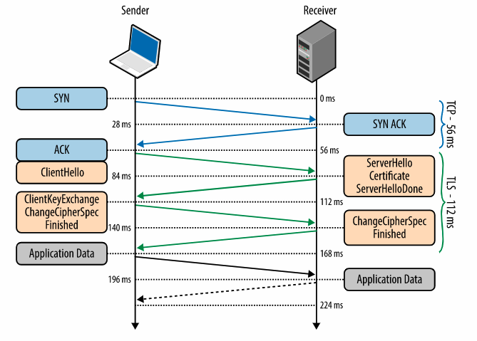
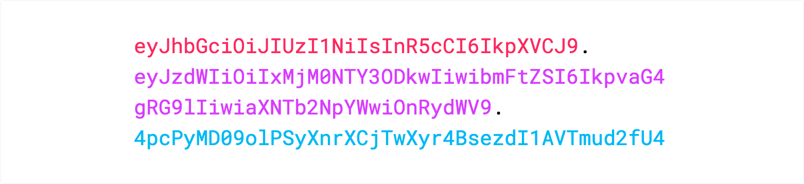
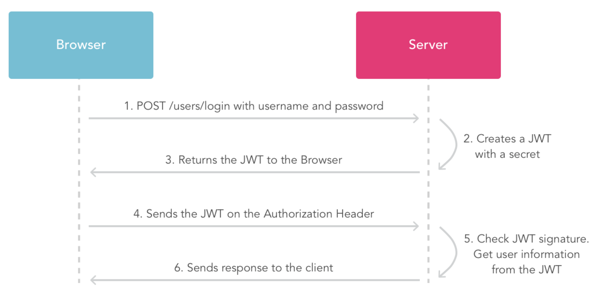
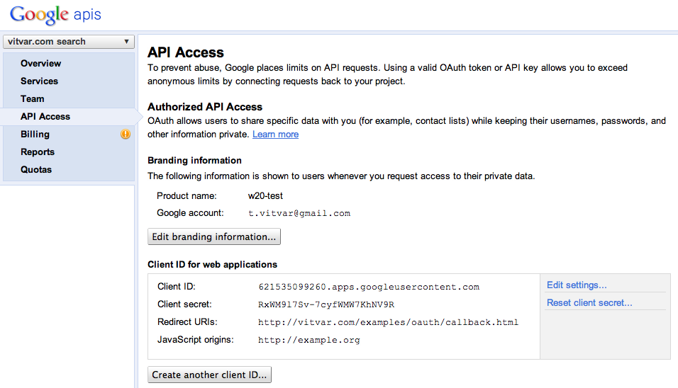

Authorization: Bearer)R1R1R2 and server invalidates R1R1 againadmin, editor, viewerinvoice:read, invoice:approve,
user:invite
editor ⇒ Alice inherits editor permissions
viewer: project:read issue:read editor: project:read issue:read issue:create issue:update admin: project:read project:delete issue:* user:invite user:remove
Alice -> editor Bob -> viewer Peter -> (no role)
GET /projects/123 → requires project:read POST /projects/123/issues → requires issue:create PUT /projects/123/issues/9 → requires issue:update POST /org/users/invite → requires user:invite
POST /projects/123/issuesadmin vs
project-admin
issue:read is not enoughrole=editor in
project 123


http:// request (or insecure redirect) enables SSL-strippingStrict-Transport-Security: max-age=31536000; includeSubDomains; preload
max-age: how long the rule is cached (seconds)includeSubDomains: apply to all subdomainspreload: submit domain to browser preload list (must meet requirements)http://example.comhttps://example.com<header>.<payload>.<signature>
{
"alg": "HS256",
"typ": "JWT"
}
{
"sub": "1234567890",
"name": "John Doe",
"admin": true
}
HMACSHA256( base64UrlEncode(header) + "." + base64UrlEncode(payload), secret)


iss (issuer): who issued the tokenaud (audience): who the token is intended for (which API)sub (subject): the user / entity identifierexp (expiration): token must be rejected after this timenbf (not before): token not valid before this timeiat (issued at): when the token was minted (useful for debugging / policies)jti (JWT ID): unique identifier (useful for revocation lists)
exp (and allow small clock skew)iss matches expected issueraud matches your service/APInbf/iat; optionally check jti against a
denylistexp claimaccess_token to the clientaccess_tokenaccess_token
from
authorization window,
it stores the access_token in a cookie.access_token GET or POSThttps://accounts.google.com/o/oauth2/auth
application/x-www-form-urlencodedclient_id – id of the client that was previously registeredredirect_uri – an URI that auth. server will redirect to when
user
grants/rejectsscope – string identifying resources/services to be accessedresponse_type – type of the response (token or
code)
state (optional) – state between request and redirecthttps://accounts.google.com/o/oauth2/auth? client_id=621535099260.apps.googleusercontent.com& redirect_uri=http://w20.vitvar.com/examples/oauth/callback.html& scope=https://www.google.com/m8/feeds& response_type=token
redirect_uriaccess_token and expires_in
(by using window.location.hash)https://w20.vitvar.com/examples/oauth/callback.html# access_token=1/QbZfgDNsnd& expires_in=4301
redirect_uri with query string parameter
error=access_denied
hhttp://w20.vitvar.com/examples/oauth/callback.html? error=access_denied
scopescope is https://www.google.com/m8/feedsoauth_tokencurl https://www.google.com/m8/feeds/contacts/default/full? oauth_token=1/dERFd34Sf
Authorizationcurl -H "Authorization: OAuth 1/dERFd34Sf" https://www.google.com/m8/feeds/contacts/default/full
200 OK401 Unauthorized when
token expires or the client hasn't performed the authorization request.
response_type must be code
https://accounts.google.com/o/oauth2/auth? client_id=621535099260.apps.googleusercontent.com& redirect_uri=http://w20.vitvar.com/examples/oauth/callback.html& scope=https://www.google.com/m8/feeds& response_type=code
redirect_uricode and requests access_tokenhttp://w20.vitvar.com/examples/oauth/callback.html?code=4/P7...
POST request to token endpointhttps://accounts.google.com/o/oauth2/token
POST /o/oauth2/token HTTP/1.1 Host: accounts.google.com Content-Type: application/x-www-form-urlencoded code=4/P7q7W91a-oMsCeLvIaQm6bTrgtp6& client_id=621535099260.apps.googleusercontent.com& client_secret=XTHhXh1S2UggvyWGwDk1EjXB& redirect_uri=http://w20.vitvar.com/examples/oauth/callback.html& grant_type=authorization_code
access_token and refresh_token
{ "access_token" : "1/fFAGRNJru1FTz70BzhT3Zg",
"expires_in" : 3920,
"refresh_token" : "1/6BMfW9j53gdGImsixUH6kU5RsR4zwI9lUVX-tqf8JXQ" }
POST request to the token endpoint with
grant_type=refresh_token
and
the previously obtained value of refresh_token
POST /o/oauth2/token HTTP/1.1 Host: accounts.google.com Content-Type: application/x-www-form-urlencoded client_id=21302922996.apps.googleusercontent.com& client_secret=XTHhXh1SlUNgvyWGwDk1EjXB& refresh_token=1/6BMfW9j53gdGImsixUH6kU5RsR4zwI9lUVX-tqf8JXQ& grant_type=refresh_token
https://www.google.com/accounts/o8/id ?openid.ns=http://specs.openid.net/auth/2.0 &openid.return_to=https://www.example.com/checkauth &openid.realm=http://www.example.com/ &openid.assoc_handle=ABSmpf6DNMw &openid.mode=checkid_setup
ns – protocol version (obtained from the XRDS)mode – type of message or additional semantics
(checkid_setup indicates that interaction between the provider and the user
is allowed during authentication)return_to – callback page the provider sends the resultrealm – domain the user will trust, consistent with
return_to
assoc_handle – "log in" for web app with openid providerhttp://www.example.com/checkauth ?openid.ns=http://specs.openid.net/auth/2.0 &openid.mode=id_res &openid.return_to=http://www.example.com:8080/checkauth &openid.assoc_handle=ABSmpf6DNMw &openid.identity=https://www.google.com/accounts/o8/id/id=ACyQatiscWvwqs4UQV_U
identity to identify user in the applicationhttp://www.example.com/checkauth ?openid.mode=cancel &openid.ns=http://specs.openid.net/auth/2.0